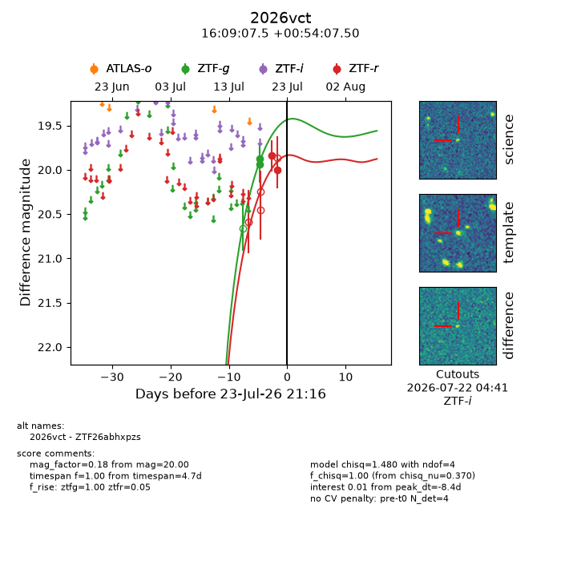
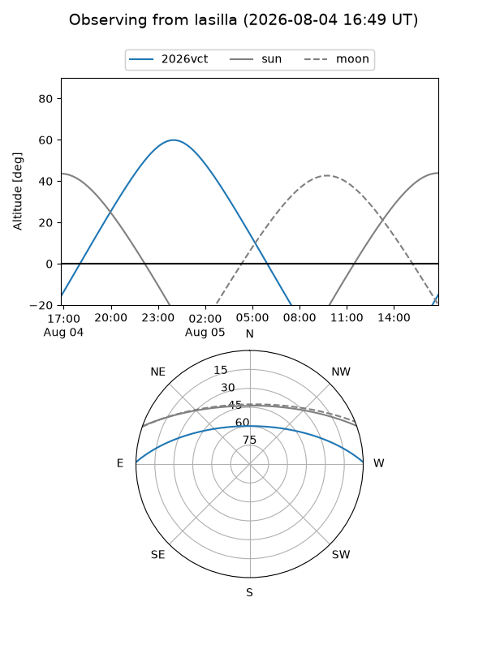
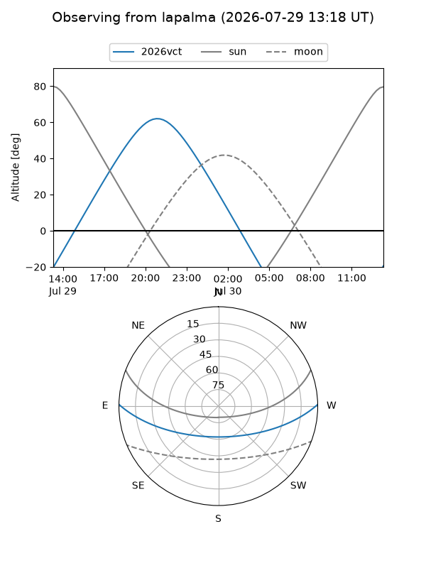
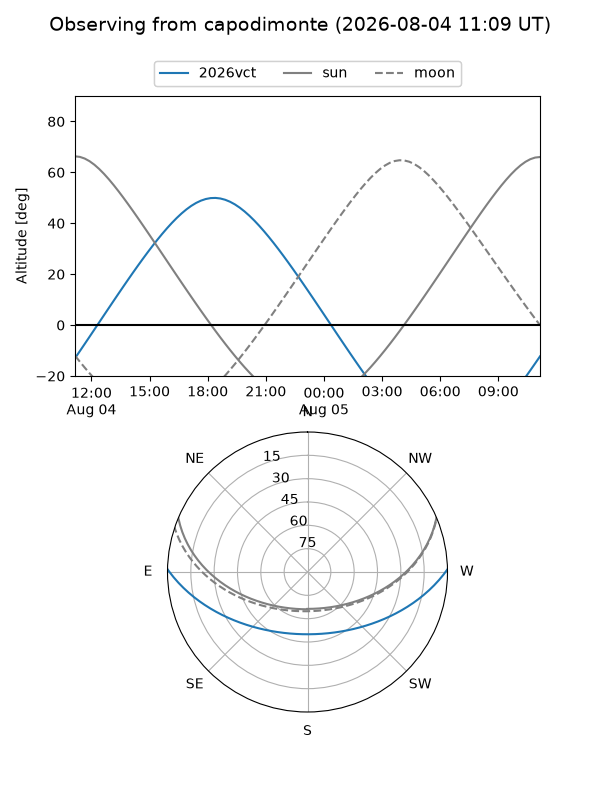
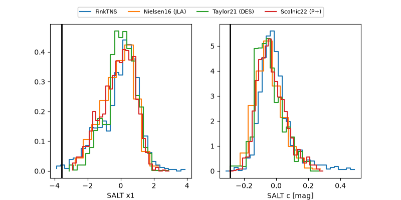

2026vct
Target 2026vct at 2026-07-23 21:19
Aliases and brokers:
FINK-ZTF: ztf.fink-portal.org/ZTF26abhxpzs
Lasair-ZTF: lasair-ztf.lsst.ac.uk/objects/ZTF26abhxpzs
ALeRCE-ZTF: alerce.online/object/ZTF26abhxpzs
YSE-PZ: ziggy.ucolick.org/yse/transient_detail/2026vct
TNS name: wis-tns.org/object/2026vct
Direct TNS query: direct search
alt names
ZTF26abhxpzs (ztf,fink_ztf)
2026vct (tns,yse)
Coordinates:
equatorial (ra, dec) = 242.2811,+0.90208
equatorial (HMS+DMS) = 16:09:07.45,+00:54:07.50
galactic (l, b) = (12.5228,+35.87607)
Flags:
TNS type: nan
peak dt: -8.4
Photometry:
last ztfg=19.88, ztfr=20.00
2 ztfg, 2 ztfr detections
Lightcurve

Visibility



Additional plots
